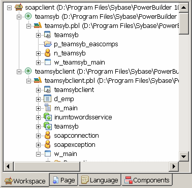

To create a new Web service proxy, select the Web Service Proxy Wizard icon from the Projects page in the New dialog box. The Web Service Proxy Wizard helps you create the proxy so you can use the Web service in PowerScript. If you select the EasySoap Web service engine, one proxy is created for each port.
You can also select the Web Service Proxy icon from the Projects page in the New dialog box. The Web Service Proxy icon opens the Project painter for Web services so that you can create a project, specify options, and build the proxy library. The new project lists the Web service (and, for the EasySoap engine, the ports for which proxies will be generated) and specifies the name of the output library that will contain the generated proxy objects.
Whether you create the Web service project through the wizard or in the painter, the final step is to build the proxy objects by clicking the Build icon on the painter bar or selecting Design>Deploy project from the menu bar.
 Circular references Generation of a Web service proxy from a WSDL file that contains
a circular reference is not supported in PowerBuilder. An example
of such a "circular reference" is a structure
that includes itself as a child class member.
Circular references Generation of a Web service proxy from a WSDL file that contains
a circular reference is not supported in PowerBuilder. An example
of such a "circular reference" is a structure
that includes itself as a child class member.
PowerBuilder provides live access to Universal Description, Discovery, and Integration (UDDI) registries for both PowerScript and JSP targets. The UDDI service is an industry-wide effort to bring a common standard for business-to-business integration. It defines a set of standard interfaces for accessing a database of Web services.
The UDDI browser is incorporated in the Web Service Proxy wizard as well as in the JSP Web Service Proxy wizard. You open UDDI search pages by clicking the Search From UDDI button on the Select WSDL File page of these wizards or on the Web Service page of the properties dialog box for a Web Service Proxy Generator project. The UDDI Search page has search fields and options listed in Table 31-2.
The next wizard page in the UDDI search depends on whether you are searching a key word in business names or service names:
After you select a service on the Select Service page of a wizard, the UDDI search is complete and you continue your selections on the remaining pages of the wizard.
The Web Service page of the properties dialog box for a Web Service proxy object displays the WSDL file selection that you made in the Web Service Proxy wizard. It also allows you to modify that search through a UDDI search wizard that contains the same search options and search result lists as the UDDI search pages in the Web Service Proxy wizard.
The generated proxies display in the System Tree. You can expand the proxy nodes to display the signatures of the methods.

PowerBuilder is not case sensitive, whereas XML, SOAP, C#, and .NET are. To ensure that PowerScript code can call XML methods correctly, each method in the proxy uses an alias. The string that follows alias for contains the name and the signature of the corresponding XML or SOAP method in case-sensitive mode.
For example:
function real getquote(string ticker) alias for getQuote(xsd:string symbol)#
return xsd:float StockPrice@urn:xmethods-delayed-quotes@SoapAction
In PowerBuilder 10.5 and later versions, system types cannot be used as variable names in Web service proxies. If a PowerBuilder system type is used as a variable name, the Web Service Proxy wizard renames the variable by applying the prefix ws_. If you are migrating Web service applications from PowerBuilder 10.2 or earlier and regenerating the Web service proxies in PowerBuilder 10.5 or later, your code may need to be modified to reflect the change in variable names.
PowerBuilder system types include not only the objects and controls listed on the System tab page in the PowerBuilder Browser, but also the enumerated types listed on the Enumerated page in the Browser, such as band, button, encoding, location, and weekday. For example, if you build a Web service from a PowerBuilder custom class user object, and one of its functions has a string argument named location, in the proxy generated for that Web service, the argument is changed to string ws_location.
When an application consumes a Web service that uses the date, time, or datetime datatypes, it is possible that the service implementation processes and returns different data for application users who access the service from different time zones. This is typically the result of design considerations of the Web service and not the result of precision differences or translation errors between the Web service and the application that calls it.
The Web service proxy generator maps datatypes between XML and PowerBuilder if you use the EasySoap Web engine, and between XML, C#, .NET, and PowerBuilder if you use the .NET Web service engine. All XML data types are based on schemas from the World Wide Web Consortium Web site and .
Table 31-3 shows the datatype mappings between XML and PowerScript. If you use the .NET Web service engine, datatypes are converted to C#, then to .NET datatypes. (Table 31-4 and Table 31-5 show datatype mappings used with the .NET Web service engine.)
When you use the .NET Web Service engine, PowerBuilder converts the XML from WSDL files to C# code and compiles it in a .NET assembly. Table 31-4 displays datatype mappings for these conversions.
Table 31-5 displays the datatype mapping between C# datatypes and PowerBuilder.
Unlike XML, PowerBuilder can support only unbounded one-dimensional arrays. If an array in a WSDL file is bounded and one-dimensional, PowerBuilder automatically converts it to an unbounded array. If an array in a WSDL file is multidimensional, the return type is invalid and cannot be used.
In function prototypes, PowerBuilder displays an array type as a PowerBuilder any type. You must declare an array of the appropriate type to hold the return value.